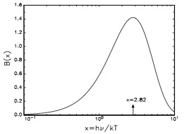
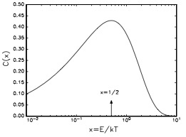
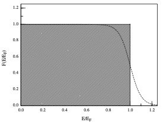

Equations of State#
Wednesday, Jan. 29, 2025
astrophysics of stars and planets - spring 2025 - university of arizona, steward observatory
Today’s Agenda#
Announcements / Recap (2m)
Dicuss Readings/ICA 4 (5m)
Reading Overview/Key Points (15m)
In-Class Assignment (Groups of 2) (20m)
Debrief on ICA (5m)
The following discussions of EoS are made using an assumption that the radiation, gas, solid, material, is in a state of local thermodynamic equilibrium (LTE).
Some defitions:
Definition 18
pressure scale height
where we used the equation of HSE to simplify. Also, sometimes the pressure scale height is defined as \(H_{\rm{P}}\) with value of order unity in the constant-density model.
Consider also the mean free path \(\lambda_{\rm{phot}}\) of a photon, or the distance traveled by a photon before it is either absorbed or scattered in a new direction:
Definition 19
photon mean free path
We can use an estimate with the electron opacity of \(\kappa\approx1 \ \rm{cm}^{2} \ \rm{g}^{-1}\) and average density of about 1 \(\rm{g} \ \rm{cm}^{-3}\), we find that \(\lambda_{\rm{phot}}\) is about a centimeter and that \(\lambda_{\rm{P}}\) is about \(\sim\) 10\(^{11}\), several orders of magnitude larger.
Distribution Functions#
The distribution function for a species of particle measures the number density of that species in the combined 6-dimensional space of coordinates plus momenta.
Some defitions:
The relation between the number density of some species of elementary nature (ions, photons, etc.) in coordinate-momentum space and its chemical potential in thermodynamic equilibrium is found from statistical mechanics to be
Definition 20
distribution function
where
\(\mu\) - chemical potential of the species
\(j\) - refers to the possible energy states of the species (e.g., energy levels of an ion)
\(\epsilon_{j}\) - is the energy of state j referred to some reference level
\(g_{j}\) - is the energy of state j referred to some reference level
\(\epsilon(p)\) - is the kinetic energy as a function of momentum p
\(+\) - for Fermi-Dirac particles (fermions of half-integer spin)
\(-\) - for Bose-Einstein particles (bosons of zero or whole integer spin)
\(h\) - Planck’s constant
Blackbody Radiation#
Photons are massless bosons of unit spin. Since they travel at c, they only have two states (two spin orientations or polarizations) for a given energy and thus the degeneracy factor in (3.8) is \(g = 2\).
We can define a radiation pressure \(P_{\rm{rad}}\)
Definition 21
radiation pressure
and the energy density
Definition 22
energy density for a radiation dominated gas
where \(a\) is the radiation constant \(7.566\times10^{-15}\) \((\rm{erg \ cm}^{-3} \ \rm{K}^{-4})\). We note that this is the result for a “gamma-law” EoS for \(\gamma=4/3\) from Eqn (1.22).
We can also define the frequence dependent Planck function:
Definition 23
and the intergrated value over all wavelengths:
Definition 24
Integrating the functional form of this equation shows the shape of the radiation curve:

A plot of the function \(B(x) = \frac{x^{3}}{[\rm{e}^{x} − 1]}\) corresponding to the vital part of either uν or the Planck function . The maximum is at \(x = h\nu/kT = 2.821\). If we use the central temperature of the Sun of \(T_{\rm{c}}\approx10^{7}\) K this would imply a photon energy of 2.4 keV.
Ideal Monatomic Gas#
We start by assuming that the gas has \(\mu/kT \ll\) -1. This allows us to plot the relevant portion of the distribution for a Maxwell-Boltzman Ideal Gas (\(C(x)=\sqrt{x}e^{-x}\)):

A plot of the function corresponding to the exciting part of the Maxwell–Boltzmann distribution in energy space. The maximum is at \(x = 1/2 (\epsilon = kT/2)\).
After some substitions we can define the pressure and internal energy for an ideal gas:
Definition 25
Definition 26
The Saha Equation#
an expression that relates the ionization state of a gas in thermal equilibrium to the temperature and pressure
Definition 27
for the single-level pure hydrogen gas. We can redefine the degree of ionization,
Definition 28
Take away - in practice, semi-analytic methods are not accurate and you are left with using tables.
Fermi-Dirac Equations of State#
These EoS describe electrons, protons, and neutrons. The prime motivation for this discussion is that the equation of state in the inner regions of many highly evolved stars, including white dwarfs, is dominated by degenerate electrons and, to a great extent, this determines the structure of such stars.
The Completely Degenerate Gas#
Assuming that the gas is at zero temperature. The critical kinetic energy at which the Fermi

The function \(F(\epsilon/\epsilon_{F})\) of (3.47) versus particle kinetic energy in units of fermi energy for zero temperature. Fermions are restricted to the shaded area of unit height and width and do not have energies greater than the Fermi energy EF . The dashed line shows how \(F(E)\) is changed by raising the temperature slightly. (In this case \(\epsilon_{F}/kT\) = 20.)
Realize though that this is a rough statement: there is no clean demarcation line on the \(T-\rho \mu_{e}\) plane that distinguishes degenerate from nondegenerate electrons.
In-Class Activity#
Head over to ICA5, work with the person next to you.